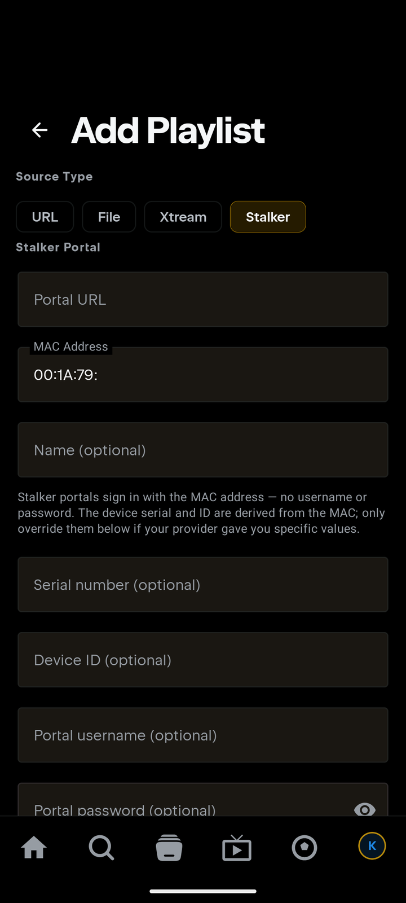
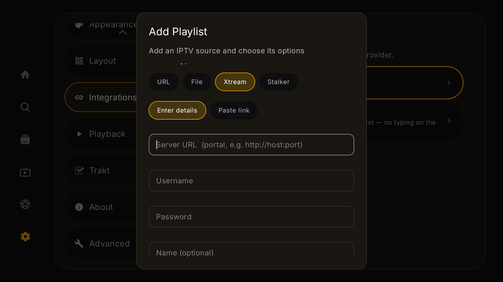

📡 Add a Stalker portal
Use this if your provider gave you a portal URL and a MAC address (the details usually meant for a set-top box / "STB emulator"). Stalker portals sign in with the MAC — no username or password needed in most cases.
📱 On your phone
- Tap the IPTV tab → Add IPTV provider. (Or: profile avatar → Settings → Integrations → IPTV (Xtream Codes) → Add Playlist.)
- Set Source Type to Stalker.
- Fill the Stalker Portal form:
- Portal URL — e.g.
http://host:port/c/(many providers include the trailing/c/) - MAC Address — the one registered with your provider, format
00:1A:79:xx:xx:xx(the00:1A:79:prefix is pre-filled)
- Portal URL — e.g.
- Press Add Playlist.

📺 On your TV
- Open IPTV in the sidebar → Add IPTV provider → Source Type Stalker.
- Enter Portal URL and MAC Address, then Add Playlist.
- TV extras: Randomize MAC generates a virtual STB MAC (only useful if your provider lets you register a new one), and Send Device ID controls whether a device identifier is sent to the portal — leave it as-is unless your provider says otherwise.

The optional fields (when your provider gave you more)
The device serial and ID are derived from the MAC automatically — only override them if your provider handed you specific values:
- Serial number (optional) / Device ID (optional) — paste exactly what the provider sent.
- Portal username / password (optional) — a few portals add a login on top of the MAC; fill these only if yours does.
Troubleshooting
- "Portal error" / won't sign in? Check the MAC is the exact one registered with the provider, and try the Portal URL with and without the trailing
/c/. - Worked, then stopped after switching apps? Some portals only allow one active session per MAC — make sure the same MAC isn't signed in on another box or app at the same time.
- Provider says "wrong device"? They may check serial/Device ID — ask them for the values and put them in the optional fields.
- Still stuck? Open a "Playlist / source won't work" report.
🔒 Your portal URL + MAC are your credentials. Don't post them publicly — redact like
http://REDACTED/c/, MAC 00:1A:79:xx:xx:xx.